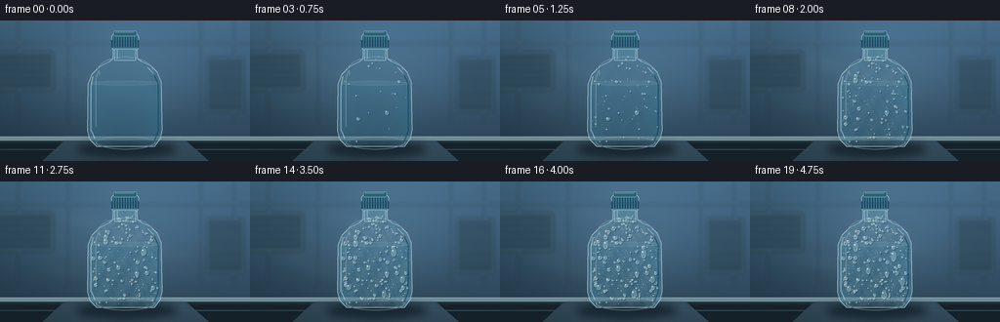
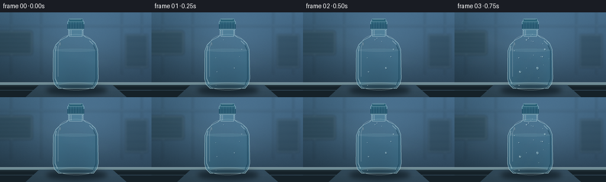

CODING AGENTS AS PIXEL WORLD MODELS
traex/GPT-5.6-Sol · phygen_115
点击播放 · 原生 RGB 像素
逐轮保存的候选
回放视频、检查图与代码变化。
每份候选均可单独播放。实际图片检查记录在下方工具轨迹中。
候选 01播放与检查图
点击播放 · 原生 RGB 像素


展开代码变化
--- 上一保存版本
+++ 本次保存版本
@@ -0,0 +1,244 @@
+from pathlib import Path
+import math
+import numpy as np
+from PIL import Image, ImageDraw, ImageFilter
+import artifact_io
+
+# Procedural, deterministic timelapse of condensation forming on a chilled bottle.
+W, H, N, SCALE = 256, 144, 20, 4
+SW, SH = W*SCALE, H*SCALE
+rng = np.random.default_rng(115)
+
+def sc(v):
+ return int(round(v*SCALE))
+
+def pts(seq):
+ return [(sc(x), sc(y)) for x,y in seq]
+
+def rgba_layer():
+ return Image.new("RGBA", (SW, SH), (0,0,0,0))
+
+def smoothstep(a,b,x):
+ if b == a: return float(x >= b)
+ q = max(0.0,min(1.0,(x-a)/(b-a)))
+ return q*q*(3-2*q)
+
+# Stable background: a blue-white refrigerated room with insulated wall panels.
+yy, xx = np.mgrid[0:SH, 0:SW]
+x = xx/SCALE; y = yy/SCALE
+base = np.zeros((SH,SW,3), dtype=np.float32)
+base[:,:,0] = 30 + 28*(1-y/H) + 10*x/W
+base[:,:,1] = 49 + 43*(1-y/H) + 13*x/W
+base[:,:,2] = 62 + 55*(1-y/H) + 18*x/W
+# Cool pool of diffuse light behind the subject.
+glow = np.exp(-(((x-131)/95)**2 + ((y-53)/65)**2))
+base += glow[:,:,None]*np.array([19,25,29])[None,None,:]
+noise = rng.normal(0,1.7,(SH,SW,1))
+base += noise
+background = Image.fromarray(np.uint8(np.clip(base,0,255)), "RGB").convert("RGBA")
+
+# Out-of-focus room architecture.
+room = rgba_layer(); d = ImageDraw.Draw(room)
+d.rectangle([0,0,SW,SH], fill=(0,0,0,0))
+# insulated vertical seams and ceiling edges
+for px in [18, 69, 205, 239]:
+ d.rectangle([sc(px),0,sc(px+.8),sc(105)], fill=(20,42,54,75))
+ d.line([sc(px+1.8),0,sc(px+1.8),sc(105)], fill=(155,193,207,34), width=sc(.7))
+d.line([0,sc(22),SW,sc(22)], fill=(166,201,210,38), width=sc(1))
+d.line([0,sc(24),SW,sc(24)], fill=(10,27,38,55), width=sc(1))
+# blurred evaporator box and shelving on the left/right
+d.rounded_rectangle([sc(-9),sc(31),sc(55),sc(72)], radius=sc(4), fill=(42,67,78,135), outline=(137,173,185,55), width=sc(1))
+for py in [38,45,52,59,66]:
+ d.line([0,sc(py),sc(50),sc(py)], fill=(12,31,40,90), width=sc(1))
+d.rectangle([sc(211),sc(37),sc(250),sc(94)], fill=(38,61,72,100), outline=(139,173,183,40), width=sc(1))
+for py in [48,61,75,88]:
+ d.line([sc(212),sc(py),sc(249),sc(py)], fill=(14,33,43,70), width=sc(1))
+room = room.filter(ImageFilter.GaussianBlur(sc(1.8)))
+background = Image.alpha_composite(background, room)
+
+# Stainless shelf, sharp at foreground.
+shelf = rgba_layer(); d = ImageDraw.Draw(shelf)
+d.rectangle([0,sc(119),SW,SH], fill=(30,45,52,255))
+d.rectangle([0,sc(119),SW,sc(123)], fill=(110,139,148,255))
+d.line([0,sc(119),SW,sc(119)], fill=(211,230,232,145), width=sc(.8))
+d.rectangle([0,sc(126),SW,SH], fill=(21,33,40,255))
+# broad steel reflection
+d.polygon(pts([(66,123),(190,123),(214,144),(43,144)]), fill=(83,108,116,45))
+d.line([0,sc(132),SW,sc(132)], fill=(157,178,180,24), width=sc(1))
+background = Image.alpha_composite(background, shelf)
+
+# Bottle geometry masks.
+bottle_poly = [(116,27),(140,27),(140.5,39),(145,42),(154,46),(161,53),
+ (165,63),(166,112),(164,121),(158,129),(99,129),(92,122),
+ (89.5,113),(90,65),(94,55),(102,47),(112,42),(115.5,39)]
+bottle_mask = Image.new("L",(SW,SH),0)
+ImageDraw.Draw(bottle_mask).polygon(pts(bottle_poly), fill=255)
+# soften just enough for smooth plastic edge
+bottle_mask = bottle_mask.filter(ImageFilter.GaussianBlur(sc(.18)))
+
+# static cast shadow below bottle
+shadow = rgba_layer(); ds=ImageDraw.Draw(shadow)
+ds.ellipse([sc(78),sc(124),sc(181),sc(140)], fill=(4,13,18,145))
+shadow = shadow.filter(ImageFilter.GaussianBlur(sc(4)))
+background = Image.alpha_composite(background,shadow)
+
+# Generate condensation sites. Positions are sampled in an approximate bottle interior.
+def halfwidth_at(py):
+ if py < 41: return 11
+ if py < 56: return 11 + (py-41)*1.55
+ if py < 116: return 36.5
+ return 36.5 - (py-116)*.55
+
+drops=[]
+for i in range(155):
+ py=float(rng.uniform(35,124)); hw=halfwidth_at(py)
+ px=float(128+rng.uniform(-hw+3, hw-3))
+ # staged nucleation through the timelapse; very small beads tend to appear first
+ start=float(np.clip(rng.beta(1.45,2.0)*17.2,0.3,17.0))
+ r=float(np.clip(rng.lognormal(mean=-0.12,sigma=.52),.38,2.25))
+ aspect=float(rng.uniform(.72,1.14))
+ drops.append((px,py,start,r,aspect,float(rng.uniform(0,6.28))))
+# Deliberate large beads that emerge by coalescence near the end.
+major=[(108,61,5.0,2.7,1.13),(147,72,7.5,3.15,1.22),(121,88,9.0,2.5,1.12),
+ (156,100,10.5,2.85,1.35),(101,108,11.0,2.4,1.18),(137,115,12.0,3.1,1.35),
+ (116,48,13.0,1.8,1.1)]
+for q in major:
+ drops.append((*q,float(rng.uniform(0,6.28))))
+
+# tiny surface specks use separate deterministic sites
+micro=[]
+for i in range(185):
+ py=float(rng.uniform(43,125)); hw=halfwidth_at(py)
+ px=float(128+rng.uniform(-hw+2,hw-2))
+ start=float(rng.uniform(2.5,18.2))
+ micro.append((px,py,start,float(rng.uniform(.16,.35))))
+
+frames=[]
+for fi in range(N):
+ im=background.copy()
+ t=float(fi)
+
+ # Moist air moves through the cold room, as faint shifting wisps.
+ mist=rgba_layer(); md=ImageDraw.Draw(mist)
+ phase=fi*.65
+ for j in range(5):
+ cx=37 + ((phase*5.5+j*34)%145)
+ cy=37+j*13 + 4*math.sin(phase*.42+j)
+ alpha=int(12 + 8*smoothstep(0,7,t))
+ md.ellipse([sc(cx-29),sc(cy-6),sc(cx+28),sc(cy+6)], fill=(207,234,240,alpha))
+ mist=mist.filter(ImageFilter.GaussianBlur(sc(8)))
+ im=Image.alpha_composite(im,mist)
+
+ # Main refractive plastic/water body: vertical and edge-dependent shading.
+ body_arr=np.zeros((SH,SW,4),dtype=np.uint8)
+ nx=np.abs(x-128)/39
+ edge=np.clip(nx,0,1)**2.5
+ vert=np.clip((y-29)/102,0,1)
+ body_arr[:,:,0]=np.clip(65 + 19*(1-edge),0,255)
+ body_arr[:,:,1]=np.clip(119 + 26*(1-edge),0,255)
+ body_arr[:,:,2]=np.clip(142 + 31*(1-edge),0,255)
+ body_arr[:,:,3]=np.clip(38 + 75*edge + 12*vert,0,145).astype(np.uint8)
+ body=Image.fromarray(body_arr,"RGBA")
+ body.putalpha(Image.fromarray(np.minimum(np.array(body.getchannel('A')),np.array(bottle_mask)).astype(np.uint8)))
+ im=Image.alpha_composite(im,body)
+
+ # Water inside, subtle meniscus and cold cyan depth.
+ water=rgba_layer(); wd=ImageDraw.Draw(water)
+ wd.polygon(pts([(92,64),(164,64),(165,113),(161,124),(156,128),(100,128),(94,123),(91,113)]),
+ fill=(35,111,142,37))
+ wd.ellipse([sc(92),sc(61.8),sc(164),sc(66.4)], fill=(123,194,207,27), outline=(194,230,234,40),width=sc(.55))
+ # inner refraction bands
+ wd.ellipse([sc(98),sc(119),sc(159),sc(130)], fill=(14,60,80,27), outline=(174,217,224,40),width=sc(.7))
+ water.putalpha(Image.composite(water.getchannel('A'),Image.new('L',(SW,SH),0),bottle_mask))
+ im=Image.alpha_composite(im,water)
+
+ # A diffuse condensation film blooms before resolving into droplets.
+ film_strength=smoothstep(1.5,13.0,t)
+ film=rgba_layer()
+ fa=np.array(bottle_mask,dtype=np.float32)
+ # mottled film, strongest over broad body and center
+ mott=(0.65+0.22*np.sin(x*.33+y*.21)+0.13*np.sin(x*.79-y*.43))
+ alpha=np.uint8(np.clip(fa/255 * mott * (31*film_strength),0,255))
+ film_arr=np.zeros((SH,SW,4),dtype=np.uint8)
+ film_arr[:,:,:3]=np.array([194,226,231],dtype=np.uint8)
+ film_arr[:,:,3]=alpha
+ film=Image.fromarray(film_arr,'RGBA').filter(ImageFilter.GaussianBlur(sc(.65)))
+ im=Image.alpha_composite(im,film)
+
+ # Bottle rim, molded contour and highlights.
+ contour=rgba_layer(); cd=ImageDraw.Draw(contour)
+ cd.line(pts(bottle_poly+[bottle_poly[0]]), fill=(190,225,231,175), width=sc(.85), joint='curve')
+ cd.line(pts([(95,57),(93,68),(93,112),(97,121)]), fill=(215,240,242,105),width=sc(1.35))
+ cd.line(pts([(101,51),(98,60),(98,109)]), fill=(255,255,255,70),width=sc(.75))
+ cd.line(pts([(158,56),(162,65),(162,113),(158,123)]), fill=(7,47,68,115),width=sc(1.25))
+ cd.line(pts([(151,48),(157,54)]),fill=(221,244,246,115),width=sc(.8))
+ # shoulder and molded base creases
+ cd.arc([sc(99),sc(37),sc(157),sc(68)],190,350,fill=(224,244,246,72),width=sc(.7))
+ cd.arc([sc(98),sc(117),sc(159),sc(132)],0,180,fill=(208,235,238,95),width=sc(.8))
+ im=Image.alpha_composite(im,contour)
+
+ # Fine nucleation beads.
+ dots=rgba_layer(); dd=ImageDraw.Draw(dots)
+ for px,py,start,r in micro:
+ g=smoothstep(start,start+2.2,t)
+ if g<=0: continue
+ rr=r*(.35+.65*g)
+ dd.ellipse([sc(px-rr),sc(py-rr),sc(px+rr),sc(py+rr)],fill=(225,245,246,int(65+80*g)))
+ if rr>.23:
+ dd.point((sc(px-.08),sc(py-.10)),fill=(255,255,255,185))
+ im=Image.alpha_composite(im,dots)
+
+ # Dimensional droplets: shadow/refraction, pale lens, bright glint.
+ dl=rgba_layer(); dr=ImageDraw.Draw(dl)
+ for idx,(px,py,start,r,aspect,ang) in enumerate(drops):
+ g=smoothstep(start,start+3.0,t)
+ if g<=0: continue
+ rr=r*(.28+.72*g)
+ # A few mature large drops slide down, leaving a wet trail.
+ slide=0.0
+ if r>2.3:
+ slide=max(0,t-(start+5.8))*0.72
+ slide=min(slide,5.8)
+ cy=py+slide
+ rx=rr*(.82 if r>2 else 1.0); ry=rr*aspect*(1+.10*slide)
+ if slide>max(.25,ry*.2):
+ dr.rounded_rectangle([sc(px-.42),sc(py+ry*.2),sc(px+.42),sc(cy)],radius=sc(.35),fill=(176,219,227,int(30+8*slide)))
+ dr.line([sc(px-.5),sc(py+ry*.2),sc(px-.5),sc(cy)],fill=(235,250,251,48),width=sc(.25))
+ # lower-right contact shadow
+ dr.ellipse([sc(px-rx+.65),sc(cy-ry+.85),sc(px+rx+.8),sc(cy+ry+.9)],fill=(5,39,55,int(48+30*g)))
+ # lens body and lower rim
+ dr.ellipse([sc(px-rx),sc(cy-ry),sc(px+rx),sc(cy+ry)],fill=(166,214,224,int(42+35*g)),outline=(220,244,246,int(125+50*g)),width=max(1,sc(.28)))
+ inset=min(.15,rx*.18,ry*.18)
+ dr.arc([sc(px-rx+inset),sc(cy-ry+inset),sc(px+rx-inset),sc(cy+ry-inset)],15,155,fill=(255,255,255,205),width=max(1,sc(.25)))
+ dr.arc([sc(px-rx+inset),sc(cy-ry+inset),sc(px+rx-inset),sc(cy+ry-inset)],185,310,fill=(16,67,86,95),width=max(1,sc(.28)))
+ hr=max(.18,rr*.22)
+ dr.ellipse([sc(px-rx*.42-hr),sc(cy-ry*.43-hr),sc(px-rx*.42+hr),sc(cy-ry*.43+hr)],fill=(255,255,255,int(180+55*g)))
+ im=Image.alpha_composite(im,dl)
+
+ # Cap and neck in front, with crisp ridges.
+ cap=rgba_layer(); cp=ImageDraw.Draw(cap)
+ cp.rounded_rectangle([sc(114),sc(14),sc(142),sc(30)],radius=sc(2.7),fill=(33,88,111,255),outline=(164,211,221,210),width=sc(.7))
+ cp.rectangle([sc(114),sc(20),sc(142),sc(28)],fill=(27,78,102,245))
+ for px in np.linspace(116,140,10):
+ cp.line([sc(px),sc(16),sc(px),sc(27)],fill=(115,170,187,150),width=sc(.45))
+ cp.line([sc(px+.7),sc(17),sc(px+.7),sc(27)],fill=(7,52,74,125),width=sc(.3))
+ cp.line([sc(115),sc(28),sc(141),sc(28)],fill=(213,237,239,130),width=sc(.6))
+ cp.rounded_rectangle([sc(116),sc(10.5),sc(140),sc(16)],radius=sc(1.5),fill=(44,99,120,255),outline=(168,211,219,170),width=sc(.6))
+ cp.line([sc(118),sc(11.7),sc(137),sc(11.7)],fill=(239,250,250,115),width=sc(.55))
+ # neck visible under cap
+ cp.rectangle([sc(117),sc(29),sc(139),sc(41)],fill=(91,155,174,68),outline=(202,232,235,135),width=sc(.7))
+ cp.line([sc(120),sc(30),sc(120),sc(39)],fill=(245,253,253,115),width=sc(.7))
+ im=Image.alpha_composite(im,cap)
+
+ # cold specular pinpoint at bottle shoulder
+ shine=rgba_layer(); sd=ImageDraw.Draw(shine)
+ sd.ellipse([sc(101),sc(50),sc(102.2),sc(57)],fill=(244,254,254,95))
+ shine=shine.filter(ImageFilter.GaussianBlur(sc(.45)))
+ im=Image.alpha_composite(im,shine)
+
+ # Downsample from 4x for smooth, photographic edges.
+ out=im.convert('RGB').resize((W,H),Image.Resampling.LANCZOS)
+ frames.append(np.asarray(out,dtype=np.uint8))
+
+frames=np.stack(frames,axis=0)
+artifact_io.save(frames,Path(__file__).resolve().parent)
可观测工具轨迹
实际执行的命令与返回图片。
命令 1exit 0
/bin/bash -lc "cat prompt.txt && printf '\\n--- RULES ---\\n' && cat GENERATION_RULES.md && printf '\\n--- SPEC ---\\n' && cat task_spec.json"
命令 2exit 0
/bin/bash -lc "find . -maxdepth 2 -type f -printf '%p\\n' | sort && printf '\\nTools:\\n' && command -v ffmpeg || true && command -v blender || true && command -v python3 || true"
命令 3exit 0
/bin/bash -lc 'cat artifact_io.py'
命令 4exit 2
/bin/bash -lc "cat > generate.py <<'PY'
from pathlib import Path
import math
import numpy as np
from PIL import Image, ImageDraw, ImageFilter
import artifact_io
# Procedural, deterministic timelapse of condensation forming on a chilled bottle.
W, H, N, SCALE = 256, 144, 20, 4
SW, SH = W*SCALE, H*SCALE
rng = np.random.default_rng(115)
def sc(v):
return int(round(v*SCALE))
def pts(seq):
return [(sc(x), sc(y)) for x,y in seq]
def rgba_layer():
return Image.new(\"RGBA\", (SW, SH), (0,0,0,0))
def smoothstep(a,b,x):
if b == a: return float(x >= b)
q = max(0.0,min(1.0,(x-a)/(b-a)))
return q*q*(3-2*q)
# Stable background: a blue-white refrigerated room with insulated wall panels.
yy, xx = np.mgrid[0:SH, 0:SW]
x = xx/SCALE; y = yy/SCALE
base = np.zeros((SH,SW,3), dtype=np.float32)
base[:,:,0] = 30 + 28*(1-y/H) + 10*x/W
base[:,:,1] = 49 + 43*(1-y/H) + 13*x/W
base[:,:,2] = 62 + 55*(1-y/H) + 18*x/W
# Cool pool of diffuse light behind the subject.
glow = np.exp(-(((x-131)/95)**2 + ((y-53)/65)**2))
base += glow[:,:,None]*np.array([19,25,29])[None,None,:]
noise = rng.normal(0,1.7,(SH,SW,1))
base += noise
background = Image.fromarray(np.uint8(np.clip(base,0,255)), \"RGB\").convert(\"RGBA\")
# Out-of-focus room architecture.
room = rgba_layer(); d = ImageDraw.Draw(room)
d.rectangle([0,0,SW,SH], fill=(0,0,0,0))
# insulated vertical seams and ceiling edges
for px in [18, 69, 205, 239]:
d.rectangle([sc(px),0,sc(px+.8),sc(105)], fill=(20,42,54,75))
d.line([sc(px+1.8),0,sc(px+1.8),sc(105)], fill=(155,193,207,34), width=sc(.7))
d.line([0,sc(22),SW,sc(22)], fill=(166,201,210,38), width=sc(1))
d.line([0,sc(24),SW,sc(24)], fill=(10,27,38,55), width=sc(1))
# blurred evaporator box and shelving on the left/right
d.rounded_rectangle([sc(-9),sc(31),sc(55),sc(72)], radius=sc(4), fill=(42,67,78,135), outline=(137,173,185,55), width=sc(1))
for py in [38,45,52,59,66]:
d.line([0,sc(py),sc(50),sc(py)], fill=(12,31,40,90), width=sc(1))
d.rectangle([sc(211),sc(37),sc(250),sc(94)], fill=(38,61,72,100), outline=(139,173,183,40), width=sc(1))
for py in [48,61,75,88]:
d.line([sc(212),sc(py),sc(249),sc(py)], fill=(14,33,43,70), width=sc(1))
room = room.filter(ImageFilter.GaussianBlur(sc(1.8)))
background = Image.alpha_composite(background, room)
# Stainless shelf, sharp at foreground.
shelf = rgba_layer(); d = ImageDraw.Draw(shelf)
d.rectangle([0,sc(119),SW,SH], fill=(30,45,52,255))
d.rectangle([0,sc(119),SW,sc(123)], fill=(110,139,148,255))
d.line([0,sc(119),SW,sc(119)], fill=(211,230,232,145), width=sc(.8))
d.rectangle([0,sc(126),SW,SH], fill=(21,33,40,255))
# broad steel reflection
d.polygon(pts([(66,123),(190,123),(214,144),(43,144)]), fill=(83,108,116,45))
d.line([0,sc(132),SW,sc(132)], fill=(157,178,180,24), width=sc(1))
background = Image.alpha_composite(background, shelf)
# Bottle geometry masks.
bottle_poly = [(116,27),(140,27),(140.5,39),(145,42),(154,46),(161,53),
(165,63),(166,112),(164,121),(158,129),(99,129),(92,122),
(89.5,113),(90,65),(94,55),(102,47),(112,42),(115.5,39)]
bottle_mask = Image.new(\"L\",(SW,SH),0)
ImageDraw.Draw(bottle_mask).polygon(pts(bottle_poly), fill=255)
# soften just enough for smooth plastic edge
bottle_mask = bottle_mask.filter(ImageFilter.GaussianBlur(sc(.18)))
# static cast shadow below bottle
shadow = rgba_layer(); ds=ImageDraw.Draw(shadow)
ds.ellipse([sc(78),sc(124),sc(181),sc(140)], fill=(4,13,18,145))
shadow = shadow.filter(ImageFilter.GaussianBlur(sc(4)))
background = Image.alpha_composite(background,shadow)
# Generate condensation sites. Positions are sampled in an approximate bottle interior.
def halfwidth_at(py):
if py < 41: return 11
if py < 56: return 11 + (py-41)*1.55
if py < 116: return 36.5
return 36.5 - (py-116)*.55
drops=[]
for i in range(155):
py=float(rng.uniform(35,124)); hw=halfwidth_at(py)
px=float(128+rng.uniform(-hw+3, hw-3))
# staged nucleation through the timelapse; very small beads tend to appear first
start=float(np.clip(rng.beta(1.45,2.0)*17.2,0.3,17.0))
r=float(np.clip(rng.lognormal(mean=-0.12,sigma=.52),.38,2.25))
aspect=float(rng.uniform(.72,1.14))
drops.append((px,py,start,r,aspect,float(rng.uniform(0,6.28))))
# Deliberate large beads that emerge by coalescence near the end.
major=[(108,61,5.0,2.7,1.13),(147,72,7.5,3.15,1.22),(121,88,9.0,2.5,1.12),
(156,100,10.5,2.85,1.35),(101,108,11.0,2.4,1.18),(137,115,12.0,3.1,1.35),
(116,48,13.0,1.8,1.1)]
for q in major:
drops.append((*q,float(rng.uniform(0,6.28))))
# tiny surface specks use separate deterministic sites
micro=[]
for i in range(185):
py=float(rng.uniform(43,125)); hw=halfwidth_at(py)
px=float(128+rng.uniform(-hw+2,hw-2))
start=float(rng.uniform(2.5,18.2))
micro.append((px,py,start,float(rng.uniform(.16,.35))))
frames=[]
for fi in range(N):
im=background.copy()
t=float(fi)
# Moist air moves through the cold room, as faint shifting wisps.
mist=rgba_layer(); md=ImageDraw.Draw(mist)
phase=fi*.65
for j in range(5):
cx=37 + ((phase*5.5+j*34)%145)
cy=37+j*13 + 4*math.sin(phase*.42+j)
alpha=int(12 + 8*smoothstep(0,7,t))
md.ellipse([sc(cx-29),sc(cy-6),sc(cx+28),sc(cy+6)], fill=(207,234,240,alpha))
mist=mist.filter(ImageFilter.GaussianBlur(sc(8)))
im=Image.alpha_composite(im,mist)
# Main refractive plastic/water body: vertical and edge-dependent shading.
body_arr=np.zeros((SH,SW,4),dtype=np.uint8)
nx=np.abs(x-128)/39
edge=np.clip(nx,0,1)**2.5
vert=np.clip((y-29)/102,0,1)
body_arr[:,:,0]=np.clip(65 + 19*(1-edge),0,255)
body_arr[:,:,1]=np.clip(119 + 26*(1-edge),0,255)
body_arr[:,:,2]=np.clip(142 + 31*(1-edge),0,255)
body_arr[:,:,3]=np.clip(38 + 75*edge + 12*vert,0,145).astype(np.uint8)
body=Image.fromarray(body_arr,\"RGBA\")
body.putalpha(Image.fromarray(np.minimum(np.array(body.getchannel('A')),np.array(bottle_mask)).astype(np.uint8)))
im=Image.alpha_composite(im,body)
# Water inside, subtle meniscus and cold cyan depth.
water=rgba_layer(); wd=ImageDraw.Draw(water)
wd.polygon(pts([(92,64),(164,64),(165,113),(161,124),(156,128),(100,128),(94,123),(91,113)]),
fill=(35,111,142,37))
wd.ellipse([sc(92),sc(61.8),sc(164),sc(66.4)], fill=(123,194,207,27), outline=(194,230,234,40),width=sc(.55))
# inner refraction bands
wd.ellipse([sc(98),sc(119),sc(159),sc(130)], fill=(14,60,80,27), outline=(174,217,224,40),width=sc(.7))
water.putalpha(Image.composite(water.getchannel('A'),Image.new('L',(SW,SH),0),bottle_mask))
im=Image.alpha_composite(im,water)
# A diffuse condensation film blooms before resolving into droplets.
film_strength=smoothstep(1.5,13.0,t)
film=rgba_layer()
fa=np.array(bottle_mask,dtype=np.float32)
# mottled film, strongest over broad body and center
mott=(0.65+0.22*np.sin(x*.33+y*.21)+0.13*np.sin(x*.79-y*.43))
alpha=np.uint8(np.clip(fa/255 * mott * (31*film_strength),0,255))
film_arr=np.zeros((SH,SW,4),dtype=np.uint8)
film_arr[:,:,:3]=np.array([194,226,231],dtype=np.uint8)
film_arr[:,:,3]=alpha
film=Image.fromarray(film_arr,'RGBA').filter(ImageFilter.GaussianBlur(sc(.65)))
im=Image.alpha_composite(im,film)
# Bottle rim, molded contour and highlights.
contour=rgba_layer(); cd=ImageDraw.Draw(contour)
cd.line(pts(bottle_poly+[bottle_poly[0]]), fill=(190,225,231,175), width=sc(.85), joint='curve')
cd.line(pts([(95,57),(93,68),(93,112),(97,121)]), fill=(215,240,242,105),width=sc(1.35))
cd.line(pts([(101,51),(98,60),(98,109)]), fill=(255,255,255,70),width=sc(.75))
cd.line(pts([(158,56),(162,65),(162,113),(158,123)]), fill=(7,47,68,115),width=sc(1.25))
cd.line(pts([(151,48),(157,54)]),fill=(221,244,246,115),width=sc(.8))
# shoulder and molded base creases
cd.arc([sc(99),sc(37),sc(157),sc(68)],190,350,fill=(224,244,246,72),width=sc(.7))
cd.arc([sc(98),sc(117),sc(159),sc(132)],0,180,fill=(208,235,238,95),width=sc(.8))
im=Image.alpha_composite(im,contour)
# Fine nucleation beads.
dots=rgba_layer(); dd=ImageDraw.Draw(dots)
for px,py,start,r in micro:
g=smoothstep(start,start+2.2,t)
if g<=0: continue
rr=r*(.35+.65*g)
dd.ellipse([sc(px-rr),sc(py-rr),sc(px+rr),sc(py+rr)],fill=(225,245,246,int(65+80*g)))
if rr>.23:
dd.point((sc(px-.08),sc(py-.10)),fill=(255,255,255,185))
im=Image.alpha_composite(im,dots)
# Dimensional droplets: shadow/refraction, pale lens, bright glint.
dl=rgba_layer(); dr=ImageDraw.Draw(dl)
for idx,(px,py,start,r,aspect,ang) in enumerate(drops):
g=smoothstep(start,start+3.0,t)
if g<=0: continue
rr=r*(.28+.72*g)
# A few mature large drops slide down, leaving a wet trail.
slide=0.0
if r>2.3:
slide=max(0,t-(start+5.8))*0.72
slide=min(slide,5.8)
cy=py+slide
rx=rr*(.82 if r>2 else 1.0); ry=rr*aspect*(1+.10*slide)
if slide>.25:
dr.rounded_rectangle([sc(px-.42),sc(py+ry*.2),sc(px+.42),sc(cy)],radius=sc(.35),fill=(176,219,227,int(30+8*slide)))
dr.line([sc(px-.5),sc(py+ry*.2),sc(px-.5),sc(cy)],fill=(235,250,251,48),width=sc(.25))
# lower-right contact shadow
dr.ellipse([sc(px-rx+.65),sc(cy-ry+.85),sc(px+rx+.8),sc(cy+ry+.9)],fill=(5,39,55,int(48+30*g)))
# lens body and lower rim
dr.ellipse([sc(px-rx),sc(cy-ry),sc(px+rx),sc(cy+ry)],fill=(166,214,224,int(42+35*g)),outline=(220,244,246,int(125+50*g)),width=max(1,sc(.28)))
dr.arc([sc(px-rx+.15),sc(cy-ry+.15),sc(px+rx-.15),sc(cy+ry-.15)],15,155,fill=(255,255,255,205),width=max(1,sc(.25)))
dr.arc([sc(px-rx+.18),sc(cy-ry+.18),sc(px+rx-.18),sc(cy+ry-.18)],185,310,fill=(16,67,86,95),width=max(1,sc(.28)))
hr=max(.18,rr*.22)
dr.ellipse([sc(px-rx*.42-hr),sc(cy-ry*.43-hr),sc(px-rx*.42+hr),sc(cy-ry*.43+hr)],fill=(255,255,255,int(180+55*g)))
im=Image.alpha_composite(im,dl)
# Cap and neck in front, with crisp ridges.
cap=rgba_layer(); cp=ImageDraw.Draw(cap)
cp.rounded_rectangle([sc(114),sc(14),sc(142),sc(30)],radius=sc(2.7),fill=(33,88,111,255),outline=(164,211,221,210),width=sc(.7))
cp.rectangle([sc(114),sc(20),sc(142),sc(28)],fill=(27,78,102,245))
for px in np.linspace(116,140,10):
cp.line([sc(px),sc(16),sc(px),sc(27)],fill=(115,170,187,150),width=sc(.45))
cp.line([sc(px+.7),sc(17),sc(px+.7),sc(27)],fill=(7,52,74,125),width=sc(.3))
cp.line([sc(115),sc(28),sc(141),sc(28)],fill=(213,237,239,130),width=sc(.6))
cp.rounded_rectangle([sc(116),sc(10.5),sc(140),sc(16)],radius=sc(1.5),fill=(44,99,120,255),outline=(168,211,219,170),width=sc(.6))
cp.line([sc(118),sc(11.7),sc(137),sc(11.7)],fill=(239,250,250,115),width=sc(.55))
# neck visible under cap
cp.rectangle([sc(117),sc(29),sc(139),sc(41)],fill=(91,155,174,68),outline=(202,232,235,135),width=sc(.7))
cp.line([sc(120),sc(30),sc(120),sc(39)],fill=(245,253,253,115),width=sc(.7))
im=Image.alpha_composite(im,cap)
# cold specular pinpoint at bottle shoulder
shine=rgba_layer(); sd=ImageDraw.Draw(shine)
sd.ellipse([sc(101),sc(50),sc(102.2),sc(57)],fill=(244,254,254,95))
shine=shine.filter(ImageFilter.GaussianBlur(sc(.45)))
im=Image.alpha_composite(im,shine)
# Downsample from 4x for smooth, photographic edges.
out=im.convert('RGB').resize((W,H),Image.Resampling.LANCZOS)
frames.append(np.asarray(out,dtype=np.uint8))
frames=np.stack(frames,axis=0)
artifact_io.save(frames,Path(__file__).resolve().parent)
PY
python3 generate.py
ls -lh pixels.npz index.html inspection.png frames/00.png frames/19.png"命令 5exit 1
/bin/bash -lc "python3 generate.py && ls -lh pixels.npz index.html inspection.png transition_check.png frames/00.png frames/19.png && python3 - <<'PY'
import numpy as np
from PIL import Image
fs=np.stack([np.asarray(Image.open(f'frames/{i:02d}.png')) for i in range(20)])
print(fs.shape,fs.dtype,fs.min(),fs.max())
print('frame mean',fs.mean(axis=(1,2,3)).round(2).tolist())
print('successive MAD',np.abs(np.diff(fs.astype(float),axis=0)).mean(axis=(1,2,3)).round(3).tolist())
PY"命令 6exit 0
/bin/bash -lc "python3 generate.py && ls -lh pixels.npz index.html inspection.png transition_check.png frames/00.png frames/19.png && python3 - <<'PY'
import numpy as np
from PIL import Image
fs=np.stack([np.asarray(Image.open(f'frames/{i:02d}.png')) for i in range(20)])
print(fs.shape,fs.dtype,fs.min(),fs.max())
print('frame mean',fs.mean(axis=(1,2,3)).round(2).tolist())
print('successive MAD',np.abs(np.diff(fs.astype(float),axis=0)).mean(axis=(1,2,3)).round(3).tolist())
PY"保存候选 1 份；完成命令 6 次；可验证图片返回 0 张。原始 API 响应与完整日志保留在本地。